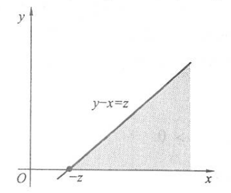

概率论习题(3)
t36
设随机变量 \(X_i, i=1,2\) 的分布列如下, 且满足 \(P\left(X_1 X_2=0\right)=1\), 试求 \(P\left(X_1=X_2\right)\). \[ \begin{array}{c|ccc} \hline X_i & -1 & 0 & 1 \\ \hline P & 0.25 & 0.5 & 0.25 \\ \hline \end{array} \]
解析
先列出 \((X_1,X_2)\) 的联合分布列：
首先根据 \(P(X_1X_2=0)=1\) 可以得到 \(p_{12}+p_{21}+p_{22}+p_{23}+p_{32}=1\) 根据联合分布概率的正则性，可以得到 \[ p_{11}=p_{13}=p_{31}=p_{33}=0 \] 即：

根据 \(p_{1\cdot}\) 的边际分布，有：\(p_{11}+p_{12}+p_{13}=P(X_1=-1)=\dfrac{1}{4}\Rightarrow p_{12}=\dfrac{1}{4}\)
同理可以得到 \(p_{32}=p_{21}=p_{23}=\dfrac{1}{4}\)
再根据 \(p_{\cdot2}\) 的边际分布，有：$p_{12}+p_{22}+p_{32}=P(X_2=0)=p_{22}=0 $
所以：\(P(X_1=X_2)=p_{11}+p_{22}+p_{33}=0\)
t37
设二维随机变量 \((X, Y)\) 的联合密度函数为 \[ p\left(x,y\right)=\left\{\begin{array}{cl} 4 x y, & 0<x<1,0<y<1, \\ 0, & \text { 其他. } \end{array}\right. \] 求： (1) \(P(X=Y)\);
\(P(X<Y)\);
\((X, Y)\) 的联合分布函数
\(P(0<X<0.5,0.25<Y<1)\);
解析
（1）\(P(X=Y)\) 的积分区域为一条直线，所以积分出来的体积为 \(0\) 即 \(P(X=Y)=0\)
（2）\(\displaystyle P(X<Y)=4 \int_0^1 \int_0^y x y \mathrm{~d} x \mathrm{~d} y=4 \int_0^1 \frac{1}{2} y^3 \mathrm{~d} y=4 \times \frac{1}{8}=0.5\).
（3）\((X, Y)\) 的联合分布函数 \(F(x, y)\) 要分如下 5 个区域表示:
 \[
F(x, y)=\left\{\begin{array}{l}
\displaystyle \int_{-\infty}^x \int_{-\infty}^y 0 \mathrm{~d} t_2
\mathrm{~d} t_1 \\
\displaystyle 4 \int_0^x \int_0^y t_1 t_2 \mathrm{~d} t_2 \mathrm{~d}
t_1 \\
\displaystyle 4 \int_0^x \int_0^1 t_1 t_2 \mathrm{~d} t_2 \mathrm{~d}
t_1 \\
\displaystyle 4 \int_0^1 \int_0^y t_1 t_2 \mathrm{~d} t_2 \mathrm{~d}
t_1 \\
\displaystyle 4 \int_0^1 \int_0^1 t_1 t_2 \mathrm{~d} t_2 \mathrm{~d}
t_1
\end{array}=\left\{\begin{array}{cc}
\displaystyle 0, & x<0, \text { 或 } y<0 ， \\
\displaystyle x^2 y^2, & 0 \leqslant x<1,0 \leqslant y<1, \\
\displaystyle x^2, & 0 \leqslant x<1,1 \leqslant y, \\
\displaystyle y^2, & 1 \leqslant x, 0 \leqslant y<1 ， \\
\displaystyle 1, & x \geqslant 1, y \geqslant 1 .
\end{array}\right.\right.
\] （4）
\[
F(x, y)=\left\{\begin{array}{l}
\displaystyle \int_{-\infty}^x \int_{-\infty}^y 0 \mathrm{~d} t_2
\mathrm{~d} t_1 \\
\displaystyle 4 \int_0^x \int_0^y t_1 t_2 \mathrm{~d} t_2 \mathrm{~d}
t_1 \\
\displaystyle 4 \int_0^x \int_0^1 t_1 t_2 \mathrm{~d} t_2 \mathrm{~d}
t_1 \\
\displaystyle 4 \int_0^1 \int_0^y t_1 t_2 \mathrm{~d} t_2 \mathrm{~d}
t_1 \\
\displaystyle 4 \int_0^1 \int_0^1 t_1 t_2 \mathrm{~d} t_2 \mathrm{~d}
t_1
\end{array}=\left\{\begin{array}{cc}
\displaystyle 0, & x<0, \text { 或 } y<0 ， \\
\displaystyle x^2 y^2, & 0 \leqslant x<1,0 \leqslant y<1, \\
\displaystyle x^2, & 0 \leqslant x<1,1 \leqslant y, \\
\displaystyle y^2, & 1 \leqslant x, 0 \leqslant y<1 ， \\
\displaystyle 1, & x \geqslant 1, y \geqslant 1 .
\end{array}\right.\right.
\] （4）
方法一：直接算积分
\(P(0<X<0.5,0.25<Y<1)=\displaystyle 4 \int_0^{0.5} x \mathrm{~d} x \int_{0.25}^1 y \mathrm{~d} y=4 \times \frac{1}{8} \times \frac{15}{32}=\frac{15}{64} \text {. }\)
方法二：利用分布函数
\(P(0<X<0.5,0.25<Y<1)=F(0.5,1)-F(0,1)-F(0.5,0.25)+F(0,0.25)=\dfrac{1}{4}-0-\dfrac{1}{64}+0=\dfrac{15}{64}.\)
\(ps:\) 第（3）问中计算分布函数 \(F(x,y)=P(X\leqslant x,Y\leqslant y)\) ，所以可以在坐标上完备地点坐标点，以这些点分别向 \(x\) 轴和 \(y\) 轴负方向画出积分区间，看这些区间和 \(p(x,y)\) 取值区间的相交情况，以此来分段完整地算出分布函数。
第（4）问给出了计算某一积分区域上联合分布概率的两种方法。
t38
设随机变量 \(Y\) 服从参数为 \(\lambda=1\) 的指数分布, 定义随机变量 \(X_k\) 如下: \[ X_k=\left\{\begin{array}{ll} 0, & Y \leqslant k, \\ 1, & Y>k, \end{array} \quad k=1,2 .\right. \]
求 \(X_1\) 和 \(X_2\) 的联合分布列.
解析
随机变量 \(Y\sim Exp(1)\) 所以 \[ p_Y(y)=\left\{\begin{array}{} \mathrm{e}^{-y},y\geqslant 0 \\ 0,其他 \end{array}\right. \] \(Y\) 的分布函数为 \(F_Y(y)=1-\mathrm{e}^{-y}\)
\(\left(X_1, X_2\right)\) 的联合分布列共有如下 4 种情况: \[ \begin{aligned} P\left(X_1=0, X_2=0\right) & =P(Y \leqslant 1, Y \leqslant 2)=P(Y \leqslant 1) \\ & =1-\mathrm{e}^{-1}=0.63212 \\ P\left(X_1=0, X_2=1\right) & =P(Y \leqslant 1, Y>2)=0 \\ P\left(X_1=1, X_2=0\right) & =P(Y>1, Y \leqslant 2)=P(1 \leqslant Y \leqslant 2) \\ & =\mathrm{e}^{-1}-\mathrm{e}^{-2}=0.23254, \\ P\left(X_1=1, X_2=1\right) & =P(Y>1, Y>2)\\ &=P(Y>2)=1-P(Y\leqslant2)\\ & =\mathrm{e}^{-2}=0.135354 \end{aligned} \] \((X,Y)\) 的分布列如下：

t39
设二维随机变量 \((X, Y)\) 的联合密度函数为 \[ p(x, y)=\left\{\begin{array}{cl} 1 / 2, & 0<x<1,0<y<2, \\ 0, & \text { 其他. } \end{array}\right. \]
求 \(X\) 与 \(Y\) 中至少有一个小于 0.5 的概率.
解析
两事件 \(\{X<0.5\}\) 与 \(\{Y<0.5\}\) 中至少有一个发生的概率为 \[ \begin{aligned} P(\{X<0.5\} \cup\{Y<0.5\}) & =1-P(X \geqslant 0.5, Y \geqslant 0.5) \\ & =1-\int_{0.5}^1 \int_{0.5}^2 \frac{1}{2} \mathrm{~d} y \mathrm{~d} x=\frac{5}{8} . \end{aligned} \]
t40
二维随机变量 \((X,Y)\) 的联合密度函数为 \[ f(x, y)=\left\{\begin{array}{cc} x^2+\dfrac{1}{3} x y, & 0 \leq x \leq 1,0 \leq y \leq 2 ， \\ 0, & \text { 其他. } \end{array}\right. \]
求 \((X, Y)\) 的边缘密度函数
解析
\[ \begin{aligned} & f_X(x)=\int_{-\infty}^{\infty} f(x, y) \mathrm{d} y=\int_0^2 x^2+\frac{1}{3} x y \mathrm{~d} y=2 x^2+\frac{2}{3} x \\ & f_Y(y)=\int_{-\infty}^{\infty} f(x, y) \mathrm{d} x=\int_0^1 x^2+\frac{1}{3} x y \mathrm{~d} x=\frac{1}{6} y+\frac{1}{3} \\ & f_X(x)=\left\{\begin{array}{cc} 2 x^2+\dfrac{2}{3} x, & 0 \leq x \leq 1, \\ 0, & \text { 其他. } \end{array} f_Y(y)=\left\{\begin{array}{cc} \dfrac{1}{6} y+\dfrac{1}{3}, & 0 \leq y \leq 2, \\ 0, & \text { 其他. } \end{array}\right.\right. \end{aligned} \]
\(ps:\) 注意边缘密度函数的区间范围。
t41
设随机变量 \(X\) 和 \(Y\) 独立同分布, 且 \[ P(X=-1)=P(Y=-1)=P(X=1)=P(Y=1)=\frac{1}{2} . \]
试求 \(P(X=Y)\).
解析
由于 \(X\) 在某个点处的概率不为 \(0\) 所以 \(X\) 一定是离散随机变量，又 \(P(X=-1)+P(X=1)=1\) 所以可以很清楚的知道 \(X\) 和 \(Y\) 的分布。
利用独立性可得 \[ \begin{aligned} P(X=Y) & =P(X=-1, Y=-1)+P(X=1, Y=1) \\ & =P(X=-1) P(Y=-1)+P(X=1) P(Y=1) \\ & =\frac{1}{4}+\frac{1}{4}=0.5 . \end{aligned} \]
t42
若两随机变量边际的分布列分别为: \[ \begin{array}{c|ccc} X & -1 & 0 & 1 \\ \hline P & \dfrac{1}{4} & \dfrac{1}{2} & \dfrac{1}{4} \end{array} \quad \begin{array}{c|cc} Y & 0 & 1 \\ \hline P & \dfrac{1}{2} & \dfrac{1}{2} \end{array} \] 若 \(P(X Y=0)=1\) ，求:
\((1)(X, Y)\) 的联合分布列；
- \(X\) 和 \(Y\) 是否独立?
解析
（1）
（2）\(P(X=0,Y=0)=0\neq P_X(X=0)P_Y(Y=0)\Rightarrow X和Y不独立\)
\(ps:\) \(t42\) 和 \(t36\) 是一个类型，都要先列出联合分布列再通过题干条件、边际分布、正则性来计算出联合分布的概率，注意不能在独立性上出错。 再结合 \(t43\) 来巩固一下离散变量的联合分布列。
t43

解析
先根据正则性有： \(a+1/9+c+1/9+b+1/3=1\) 得：\(a+b+c=4/9\)
再利用 \(X\) 和 \(Y\) 相互独立的信息计算，即：利用 \(P(X=x,Y=y)=P(X=x)P(Y=y)\) 计算：
先发现第二行和第二列上只有一个未知量，所以： \[ P(X=x_2,Y=y_2)=P(X=x_2)P(Y=y_2)\Rightarrow b=(1/9+b)(4/9+b) \] 解得 \(b=\dfrac{2}{9}\)
再发现第二行和第一列上只有一个未知量，所以： \[ P(X=x_2,Y=y_1)=P(X=x_2)P(Y=y_1)\Rightarrow 1/9=(1/9+a)(1/9+2/9+1/3) \] 解得 \(a=\dfrac{1}{18}\)
最后得 \(c=\dfrac{1}{6}\)
t44
设随机变量 \((X, Y)\) 的联合密度函数为 \[ p(x, y)= \begin{cases}1, & |x|<y, \quad 0<y<1, \\ 0, & \text { 其他. }\end{cases} \]
试求: (1) 边际密度函数 \(p_x(x)\) 和 \(p_Y(y)\); (2) \(X\) 与 \(Y\) 是否独立?
解析
（1）因为 \(p(x, y)\) 的非零区域如下：

所以, 当 \(-1<x<0\) 时, 有 \[ p_X(x)=\int_{-x}^1 \mathrm{~d} y=1+x, \]
当 \(0<x<1\) 时,有 \[ p_X(x)=\int_x^1 \mathrm{~d} y=1-x, \]
因此 \(X\) 的边际密度函数为 \[ p_X(x)= \begin{cases}1+x, & -1<x<0, \\ 1-x, & 0<x<1, \\ 0, & \text { 其他. }\end{cases} \]
又当 \(0<y<1\) 时, 有 \[ p_Y(y)=\int_{-y}^y \mathrm{~d} x=2 y, \]
因此 \(Y\) 的边际密度函数为 \[ p_Y(y)= \begin{cases}2 y, & 0<y<1, \\ 0, & \text { 其他. }\end{cases} \] （2）因为 \(p(x, y) \neq p_X(x) p_Y(y)\), 所以 \(X\) 与 \(Y\) 不独立.
t45
设随机变量 \(X, Y\) 独立同分布, 在以下情况下求随机变量 \(Z=\max \{X, Y\}\) 的分布列: (1) \(X\) 服从 \(p=0.5\) 的 \(0-1\) 分布; (2) \(X\) 服从几何分布, 即 \(P(X=k)=(1-p)^{k-1} p, k=1,2, \cdots\).
解析
（1）因为 \(X\) 与 \(Y\) 的可能取值均为 0 或 1 , 所以 \(Z=\max \{X, Y\}\) 的可能取值也为 0 或 1 , 因此 \[ \begin{aligned} & P(Z=0)=P(X=0, Y=0)=P(X=0) P(Y=0)=0.5 \times 0.5=0.25, \\ & P(Z=1)=1-P(Z=0)=0.75 . \end{aligned} \] （2）因为 \(X\) 服从几何分布, 所以 \[ P(X \leqslant i)=\sum_{j=1}^i(1-p)^{j-1} p=p \frac{1-(1-p)^i}{1-(1-p)}=1-(1-p)^i, \quad i=1,2, \cdots . \]
由此得 \[ \begin{aligned} P(Z=i) & =P(Z \leqslant i)-P(Z \leqslant i-1) \\ & =P(X \leqslant i) P(Y \leqslant i)-P(X \leqslant i-1) P(Y \leqslant i-1) \\ & =\left[1-(1-p)^i\right]^2-\left[1-(1-p)^{i-1}\right]^2 \\ & =-2(1-p)^i+(1-p)^{2 i}+2(1-p)^{i-1}-(1-p)^{2 i-2} \\ & =(1-p)^{i-1} p\left[2-(1-p)^{i-1}-(1-p)^i\right], \quad i=1,2, \cdots . \end{aligned} \]
\(ps:\) 注意通过区间相减计算离散随机变量等于某个数值的概率。相似的想法在 \(t3\) 中也有体现。
t46
设 \(X\) 和 \(Y\) 为两个随机变量, 且 \[ P(X \geqslant 0, Y \geqslant 0)=\frac{3}{7}, \quad P(X \geqslant 0)=P(Y \geqslant 0)=\frac{4}{7} . \]
试求 \(P(\max \{X, Y\} \geqslant 0)\).
解析
因为 \[ \begin{aligned} 4 / 7 & =P(X \geqslant 0)=P(X \geqslant 0, Y \geqslant 0)+P(X \geqslant 0, Y<0) \\ & =3 / 7+P(X \geqslant 0, Y<0), \end{aligned} \]
由此得 \(P(X \geqslant 0, Y<0)=1 / 7\), 同理由 \(P(Y \geqslant 0)=4 / 7\), 可得 \(P(X<0, Y \geqslant 0)=\) \(1 / 7\), 再由 \[ \begin{aligned} & P(X \geqslant 0, Y \geqslant 0)+P(X \geqslant 0, Y<0)+P(X<0, Y \geqslant 0)+P(X<0, Y<0)=1, \\ & \text { 得 } P(X<0, Y<0)=2 / 7 \text {, 所以 } \\ & P(\max \{X, Y\} \geqslant 0)=1-P(\max \{X, Y\}<0)=1-P(X<0, Y<0)=1-2 / 7=5 / 7 . \end{aligned} \]
t47
设二维随机变量 \((X,Y)\) 是连续随机变量，联合密度函数为 \(p(x,y)\) ，写出下列连续随机变量 \(Z\) 的密度函数：
（1）\(Z=X+Y\)
（2）\(Z=XY\)
（3）\(Z=X/Y\)
答案
（1） \[ \begin{aligned} p_Z(z) & =\int_{-\infty}^{\infty} p_{X, Y}(x, z-x) \mathrm{d} x \\ \text { 或 } & =\int_{-\infty}^{\infty} p_{X, Y}(z-y, y) \mathrm{d} y . \end{aligned} \] （2） \[ \begin{aligned} p_Z(z) & =\int_{-\infty}^{\infty} p_{X, Y}(x, \dfrac{z}{x}) \left |\dfrac{1}{x}\right|\mathrm{d} x \\ \text { 或 } & =\int_{-\infty}^{\infty} p_{X, Y}(\dfrac{z}{y}, y) \left |\dfrac{1}{y}\right| \mathrm{d} y . \end{aligned} \] （3） \[ \begin{aligned} p_Z(z) & =\int_{-\infty}^{\infty} p_{X, Y}(zy, y) \left |y\right|\mathrm{d} x \\ \text { 或 } & =\int_{-\infty}^{\infty} p_{X, Y}(x,\dfrac{x}{z}) \dfrac{|x|}{z^2} \mathrm{d} y . \end{aligned} \] \(ps:\) 记忆的方法是把 \(p(x,y)\) 替换成对应于随机变量变换过程的 \(x,z\) 或 \(y,z\) 的式子，比如 \(Z=X/Y\) 就换成 \((zy,y)\) 或 \((x,x/z)\) 然后再在后面乘上一个对 \((\quad)\) 内含 \(z\) 的那一项对 \(z\) 求导的绝对值，比如 \(Z=X/Y\) ，\(p(zy,y)\) 后面乘 \(|y|\) 、\(p(x,x/z)\) 后面乘 \(\dfrac{|x|}{z^2}.\)
t48
设 \(X\) 与 \(Y\) 的联合密度函数为 \[ p(x, y)= \begin{cases}\mathrm{e}^{-(x+y)}, & x>0, y>0, \\ 0, & \text { 其他. }\end{cases} \]
试求以下随机变量的密度函数: (1) \(Z=(X+Y) / 2\); (2) \(Z=Y-X\).
解析
方法一（分布函数法）：
（1）因为 \(p(x, y)\) 的非零区域为 \(x>0, y>0\), 所以当 \(z \leqslant 0\) 时, \(F_z(z)=0\), 而当 \(z>0\) 时, \[ \begin{aligned} F_Z(z) & =P(Z \leqslant z)=P(X+Y \leqslant 2 z)=\int_0^{2 z} \int_0^{2 z-x} \mathrm{e}^{-(x+y)} \mathrm{d} y \mathrm{~d} x \\ & =\int_0^{2 z} \mathrm{e}^{-x}\left(1-\mathrm{e}^{-(2 z-x)}\right) \mathrm{d} x=1-\mathrm{e}^{-2 z}-2 z \mathrm{e}^{-2 z}, \end{aligned} \]
所以, 当 \(z \leqslant 0\) 时, 有 \(p_Z(z)=0\); 而当 \(z>0\) 时, 有 \(p_{Z}(z)=4 z \mathrm{e}^{-2 z}.\)
（2）当 \(z \leqslant 0\) 时, \(p(x, y)\) 的非零区域与 \(\{y-x \leqslant z\}\) 的交集如下图：
 \[ \begin{aligned} F_Z(z) & =P(Z \leqslant z)=P(Y-X \leqslant z)=\int_0^{\infty} \int_{y-z}^{\infty} \mathrm{e}^{-(x+y)} \mathrm{d} x \mathrm{~d} y \\ & =\int_0^{\infty} \mathrm{e}^{-y} \mathrm{e}^{-(y-z)} \mathrm{d} y=\mathrm{e}^z / 2, \\ p_Z(z) & =F_Z^{\prime}(z)=\mathrm{e}^z / 2 . \end{aligned} \]
又因为当 \(z>0\) 时, \(p(x, y)\) 的非零区域与 \(\{y-x \leqslant z\}\) 的交集如下图所示：
 \[
\begin{aligned}
F_Z(z) & =P(Z \leqslant z)=P(Y-X \leqslant z)=\int_0^{\infty}
\int_0^{x+z} \mathrm{e}^{-(x+y)} \mathrm{d} y \mathrm{~d} x \\
& =\int_0^{\infty} \mathrm{e}^{-x}\left(1-\mathrm{e}^{-(x+z)}\right)
\mathrm{d} x=1-\mathrm{e}^{-z} / 2, \\
p_Z(z) & =F_Z^{\prime}(z)=\mathrm{e}^{-z} / 2 .
\end{aligned}
\] 所以，得： \[
p_Z(z)=\dfrac{\mathrm{e}^{|z|}}{2}, \quad-\infty<z<\infty \text {.
}
\] 方法二（变换变量法）：
\[
\begin{aligned}
F_Z(z) & =P(Z \leqslant z)=P(Y-X \leqslant z)=\int_0^{\infty}
\int_0^{x+z} \mathrm{e}^{-(x+y)} \mathrm{d} y \mathrm{~d} x \\
& =\int_0^{\infty} \mathrm{e}^{-x}\left(1-\mathrm{e}^{-(x+z)}\right)
\mathrm{d} x=1-\mathrm{e}^{-z} / 2, \\
p_Z(z) & =F_Z^{\prime}(z)=\mathrm{e}^{-z} / 2 .
\end{aligned}
\] 所以，得： \[
p_Z(z)=\dfrac{\mathrm{e}^{|z|}}{2}, \quad-\infty<z<\infty \text {.
}
\] 方法二（变换变量法）：

t49
设随机变量 \(X\) 与 \(Y\) 相互独立, 试在以下情况下求 \(Z=X+Y\) 的密度函数: (1) \(X \sim U(0,1), Y \sim U(0,1)\); (2) \(X \sim U(0,1), Y \sim \operatorname{Exp}(1)\).
解析
\(Z=X+Y\) 的密度函数可由卷积公式求得 \[ p_Z(z)=\int_{-\infty}^{\infty} p_X(x) p_Y(z-x) \mathrm{d} x . \] （1）因为 \(X \sim U(0,1), Y \sim U(0,1)\), 所以 \(Z=X+Y\) 可在区间 \((0,2)\) 上取值, 且使卷积公式中的被积函数大于 0 的区域必须是 \(\{0 \leqslant x \leqslant 1\}\) 与 \(\{0 \leqslant z-x \leqslant 1\}\) 的交集, 即下图的阴影部分：
从图中可以看出: \[ \begin{aligned} & \text { 当 } 0 \leqslant z \leqslant 1 \text { 时, 有 } p_Z(z)=\int_0^z \mathrm{~d} x=z, \\ & \text { 当 } 1 \leqslant z \leqslant 2 \text { 时, 有 } p_Z(z)=\int_{z-1}^1 \mathrm{~d} x=2-z . \end{aligned} \]
所以得 \(Z\) 的密度函数如下: \[ p_z(z)= \begin{cases}z, & 0 \leqslant z<1, \\ 2-z, & 1 \leqslant z<2, \\ 0, & \text { 其他. }\end{cases} \] （2）(2) 因为 \(X \sim U(0,1), Y \sim \operatorname{Exp}(1)\), 所以 \(Z=X+Y\)可在 \((0, \infty)\) 上取值,且要使卷积公式中的被积函数大于 0 的区域必须是 \(\{0 \leqslant x \leqslant 1\}\) 与 \(\{z-x \geqslant 0\}\) 的交集, 即下图的阴影部分：
从图中可以看出: \[ \begin{aligned} &当 0 \leqslant z \leqslant 1 时, 有 p_Z(z)=\int_0^z \mathrm{e}^{-(z-x)} \mathrm{d} x=1-\mathrm{e}^{-z},\\ &当 1 \leqslant z 时, 有 p_Z(z)=\int_0^1 \mathrm{e}^{-(z-x)} \mathrm{d} x=\mathrm{e}^{-z}(\mathrm{e}-1). \end{aligned} \] 所以得 \(Z\) 的密度函数如下: \[ p_Z(z)=\left\{\begin{array}{cl} 1-\mathrm{e}^{-z}, & 0<z \leqslant 1, \\ \mathrm{e}^{-z}(\mathrm{e}-1), & z>1, \\ 0, & \text { 其他. } \end{array}\right. \]
t50
设二维随机变量 \((X, Y)\) 在矩形 \[ G=\{(x, y): 0 \leqslant x \leqslant 2,0 \leqslant y \leqslant 1\} \]
上服从均匀分布, 试求边长分别为 \(X\) 和 \(Y\) 的矩形面积 \(Z\) 的密度函数.
解析
因为 \((X, Y)\) 服从矩形 \(G\) 上的均匀分布, 所以 \((X, Y)\) 的联合密度函数为 \[ p_{X, Y}(x, y)= \begin{cases}\dfrac{1}{2}, & 0 \leqslant x \leqslant 2,0 \leqslant y \leqslant 1, \\ 0, & \text { 其他. }\end{cases} \]
又因为面积 \(Z=X Y\), 所以 \(Z\) 可在区间 \((0,2)\) 上取值, 且 \(Z\) 的密度函数可用积的公式求得 \[ p_Z(z)=\int_{-\infty}^{\infty} p_{X, Y}(z / v, v) \frac{1}{|v|} \mathrm{d} v . \]
要使以上被积函数大于 \(0\) 的区域必须是 \(\{0<z / v<2\}\) 与 \(\{0<v<1\}\) 的交集, 此交集为 \(\{z / 2<v<1\}\), 所以当 \(0<z<2\) 时, 有 \[ p_Z(z)=\int_{z / 2}^1 \frac{1}{2 v} \mathrm{~d} v=\left(\frac{1}{2} \ln v\right)_{z / 2}^1=\frac{\ln 2-\ln z}{2} . \]
t51
设随机变量 \((X, Y)\) 相互独立, 其概率密度为 \[ f_X(x)=\left\{\begin{array}{cc} 1, & 0<x<1, \\ 0, & \text { 其他. } \end{array} f_Y(y)=\left\{\begin{array}{cc} e^{-y}, & y>0, \\ 0, & \text { 其他. } \end{array}\right.\right. \]
求 \(Z=2 X+Y\) 的概率密度函数
解析
方法一：

方法二：

\(ps:\) \(t47-t51\) 都是多为随机变量函数的题目，是考试的重点，要注意练习。
t52
设在区间 \((0,1)\) 上随机地取 \(n\) 个点,求相距最远的两点间的距离的数学期望.
解析
方法一
分别记此 \(n\) 个点为 \(X_1, X_2, \cdots, X_n\), 则 \(X_1, X_2, \cdots, X_n\) 相互独立, 且都服从区间 \((0,1)\) 上的均匀分布 \(U(0,1)\). 我们的目的是求 \[ E\left(\max \left\{X_1, X_2, \cdots, X_n\right\}-\min \left\{X_1, X_2, \cdots, X_n\right\}\right) . \]
而 \(Z=\max \left\{X_1, X_2, \cdots, X_n\right\}\) 和 \(T=\min \left\{X_1, X_2, \cdots, X_n\right\}\) 的密度函数分别为 \[ p_Z(z)=\left\{\begin{array}{ll} n z^{n-1}, & 0<z<1, \\ 0, & \text { 其他. } \end{array} \quad p_T(t)= \begin{cases}n(1-t)^{n-1}, & 0<t<1, \\ 0, & \text { 其他. }\end{cases}\right. \]
又因为 \[ E(Z)=\int_0^1 z n z^{n-1} \mathrm{~d} z=\frac{n}{n+1} ; \quad E(T)=\int_0^1 t n(1-t)^{n-1} \mathrm{~d} t=\frac{1}{n+1}, \]
所以 \[ E\left(\max \left\{X_1, X_2, \cdots, X_n\right\}-\min \left\{X_1, X_2, \cdots, X_n\right\}\right)=\frac{n}{n+1}-\frac{1}{n+1}=\frac{n-1}{n+1} . \] 方法二
\(n\) 个点把区间 \((0,1)\) 分成 \(n+1\) 段, 它们的长度依次记为 \(Y_1, Y_2, \cdots, Y_{n+1}\).因为此 \(n\) 个点是随机取的, 所以 \(Y_1, Y_2, \cdots, Y_{n+1}\) 具有相同的分布, 从而有相同的数学期望. 而 \(Y_1+Y_2+\cdots+Y_{n+1}=1\), 因此 \[ E\left(Y_1\right)=E\left(Y_2\right)=\cdots=E\left(Y_{n+1}\right)=\frac{1}{n+1} . \]
而相距最远的两点间的距离为 \(Y_2+Y_3+\cdots+Y_n\), 因此所求期望为 \[ E\left(Y_2+Y_3+\cdots+Y_n\right)=\frac{n-1}{n+1} . \]
\(ps:\) 方法一利用了最大值最小值分布，《知识点总结》的 \(\S 3.3\)
t53
已知连续型随机变量 \(\mathrm{X}\) 的密度函数为 \[ f(x)=\frac{1}{2} e^{-|x|},-\infty<x<\infty \] （1）求 \(X\) 的数学期望与方差 （2）求 \(X,|X|\) 的协方差, 并判断是否不相关, （3）求 \(X,|X|\) 是否相互独立
解析
（1） \(E(X)=\displaystyle \int_{-\infty}^{\infty} x f(x) d x=0 . Var(X)=\int_{-\infty}^{+\infty} x^2 f(x) d x=\int_0^{+\infty} x^2 e^{-x} d x=2\).
计算方差时使用两次分部积分。
（2） \(\displaystyle \operatorname{Cov}(X,|X|)=E(X|X|)-E X \cdot E(|X|)=E(X|X|)=\int_{-\infty}^{+\infty} x|x| f(x) d x=0\).所以 \(X\) 与 \(|X|\) 不相关. （3）对于任意给定的 \(0<x_0<+\infty\), 事件 \(\left\{|X|<x_0\right\}\) 包含在事件 \(\left\{X<x_0\right\}\) 内, 故有 \(0<P\left\{|X|<x_0\right\} \leq P\left\{X<x_0\right\}<1\),
从而 \(P\left\{X<x_0,|X|<x_0\right\}=P\left\{|X|<x_0\right\}>P\left\{|X|<x_0\right\} \cdot P\left\{X<x_0\right\}\),因此, \(X\) 与 \(|X|\) 不互相独立.
t54
随机变量 \((X, Y)\) 服从以点 \((0,1),(1,0),(1,1)\) 为顶点的三角形区域上的均匀分布, 试求 \(E(X+Y)\) 和 \(\operatorname{Var}(X+Y)\).
解析
记此三角形区域为 \(D\) ，因为 \(D\) 的面积为 \(1 / 2\), 所以 \((X, Y)\) 的联合密度函数为 \[ p_{X, Y}(x, y)= \begin{cases}2, & (x, y) \in D, \\ 0, & (x, y) \notin D .\end{cases} \]
下求 \(X\) 和 \(Y\) 各自的边际密度函数. 当 \(0<x<1\) 时, 有 \(\displaystyle p_X(x)=\int_{1-x}^1 2 \mathrm{~d} y=2 x\).
当 \(0<y<1\) 时, 有 \(\displaystyle p_Y(y)=\int_{1-y}^1 2 \mathrm{~d} x=2 y\).
计算出期望和方差： \[ E(X)=E(Y)=\frac{2}{3} ; \quad \operatorname{Var}(X)=\operatorname{Var}(Y)=\frac{1}{18} . \]
由于 \(X\) 与 \(Y\) 不独立, 所以先计算 \[ E(X Y)=\int_0^1 \int_{1-x}^1 2 x y \mathrm{~d} y \mathrm{~d} x=\frac{5}{12} \cdot \]
由此得 \[ \operatorname{Cov}(X, Y)=E(X Y)-E(X) E(Y)=\frac{5}{12}-\frac{4}{9}=-\frac{1}{36} \text {. (负相关) } \]
最后得 \[ \begin{aligned} & E(X+Y)=\frac{2}{3}+\frac{2}{3}=\frac{4}{3} \\ & \operatorname{Var}(X+Y)=\operatorname{Var}(X)+\operatorname{Var}(Y)+2 \operatorname{Cov}(X, Y)=\frac{1}{18}+\frac{1}{18}-\frac{2}{36}=\frac{1}{18} \end{aligned} \]
t55
若随机变量 \(X \sim N(0,1), Y \sim N(1,4)\) 且相关系数 \(\rho_{XY}=1\). 设 \(Y=aX+b\)
求：\(a、b.\)
解析
设 \(Y=a X+b . \quad \rho_{X Y}=1>0 \Rightarrow a>0.\)
求 \(b:\)
\(X \sim N(0,1) \Rightarrow E(X)=0 \quad Y \sim N(1,2) \Rightarrow E(Y)=1\)
则 \(E(Y)=E(a X+b)=a E(X)+b=b \quad \Rightarrow b=1\)
求 \(a:\) \(\quad X \sim N(0,1) \Rightarrow \sigma_X=1 ， \quad Y \sim N(1,4) \Rightarrow \sigma_Y=2\)
\(\rho_{X Y}=\frac{\operatorname{Cov}(X, Y)}{\sigma_X \sigma_Y}=\frac{\operatorname{Cov}(X, Y)}{1 \cdot 2}=1 \Rightarrow \operatorname{Cov}(X, Y)=2 \\\)
\(\operatorname{Cov}(X, Y)=E(XY)-E(X)E(Y)=E(X Y)=E(X(a X+1))=E\left(a X^2+X)=a E\left(X^2\right)\right.+ E(X)=aE(X^2)\)
$ (X)=1=E(X2)-(E(X))2=E(X^2) E(X^2)=1$
\(\operatorname{Cov}(X, Y)=a \Rightarrow a=2\)
t56
一商店经销某种商品, 每周进货量 \(X\) 与顾客对该种商品的需求量 \(Y\) 是相互独立的随机变量,且都服从区间 \((10,20)\) 上的均匀分布. 商店每售出一单位商品可得利润 1000 元; 若需求量超过了进货量, 则可从其他商店调剂供应, 这时每单位商品获利润为 500 元.试求此商店经销该种商品每周的平均利润.
解析
记 \(Z\) 为此商店经销该种商品每周所得的利润, 由题设知 \(Z=g(X, Y)\), 其中 \[ g(x, y)=\left\{\begin{array}{ll} 1000 y, \\ 1000 x+500(y-x) \end{array}= \begin{cases}1000 y, & y \leqslant x, \\ 500(x+y), & y>x .\end{cases}\right. \]
由题设条件知 \((X, Y)\) 的联合概率密度为 \[ p_{X, Y}(x, y)= \begin{cases}1 / 100, & 10 \leqslant x \leqslant 20,10 \leqslant y \leqslant 20, \\ 0, & \text { 其他 },\end{cases} \]
于是 \[ \begin{aligned} E(Z) & =E(g(X, Y))=\int_{-\infty}^{\infty} \int_{-\infty}^{\infty} g(x, y) p_{X, Y}(x, y) \mathrm{d} x \mathrm{~d} y \\ & =\iint_{y \leqslant x} 1000 y p_{X, Y}(x, y) \mathrm{d} x \mathrm{~d} y+\iint_{y>x} 500(x+y) p_{X, Y}(x, y) \mathrm{d} x \mathrm{~d} y \\ & =10 \int_{10}^{20} \mathrm{~d} y \int_y^{20} y \mathrm{~d} x+5 \int_{10}^{20} \mathrm{~d} y \int_{10}^y(x+y) \mathrm{d} x \\ & =20000 / 3+5 \times 1500 \approx 14166.67 . \end{aligned} \]
t57
设随机变量 \(X\) 和 \(Y\) 独立同服从参数为 \(\lambda\) 的泊松分布, 令 \[ U=2 X+Y, \quad V=2 X-Y . \]
求 \(U\) 和 \(V\) 的相关系数 \(\operatorname{Corr}(U, V)\).
解析
因为 \[ \begin{aligned} & \operatorname{Var}(U)=\operatorname{Var}(2 X+Y)=4 \operatorname{Var}(X)+\operatorname{Var}(Y)=5 \lambda, \\ & \operatorname{Var}(V)=\operatorname{Var}(2 X-Y)=4 \operatorname{Var}(X)+\operatorname{Var}(Y)=5 \lambda . \end{aligned} \]
所以 \[ \begin{aligned} \operatorname{Cov}(U, V) & =\operatorname{Cov}(2 X+Y, 2 X-Y) \\ & =\operatorname{Cov}(2 X, 2 X)+\operatorname{Cov}(Y, 2 X)-\operatorname{Cov}(2 X, Y)-\operatorname{Cov}(Y, Y) \\ & =4 \operatorname{Var}(X)-\operatorname{Var}(Y)=3 \lambda, \end{aligned} \]
由此得 \[ \operatorname{Corr}(U, V)=\frac{\operatorname{Cov}(U, V)}{\sqrt{\operatorname{Var}(U)} \sqrt{\operatorname{Var}(V)}}=\frac{3 \lambda}{5 \lambda}=\frac{3}{5} . \]
t58
设二维随机变量 \((X, Y)\) 的联合密度函数为 \[ p(x, y)= \begin{cases}3 x, & 0<y<x<1, \\ 0, & \text { 其他. }\end{cases} \]
求 \(X\) 与 \(Y\) 的相关系数.
解析
\(0<x<1\) 时 \(x\) 的密度函数为 \(\displaystyle p_X(x)=\int_0^x3x\mathrm{~d}y\)
\(0<y<1\) 时 \(y\) 的密度函数为 \(\displaystyle p_Y(y)=\int_y^13x\mathrm{~d}x\)
先计算 \(X\) 与 \(Y\) 的期望、方差与协方差. \[ \begin{aligned} & E(X)=\int_0^1 \int_0^x 3 x^2 \mathrm{~d} y \mathrm{~d} x=\int_0^1 3 x^3 \mathrm{~d} x=\frac{3}{4}, \\ & E\left(X^2\right)=\int_0^1 \int_0^x 3 x^3 \mathrm{~d} y \mathrm{~d} x=\int_0^1 3 x^4 \mathrm{~d} x=\frac{3}{5}, \\ & E(Y)=\int_0^1 \int_0^x 3 x y \mathrm{~d} y \mathrm{~d} x=\int_0^1 \frac{3}{2} x^3 \mathrm{~d} x=\frac{3}{8}, \\ & E\left(Y^2\right)=\int_0^1 \int_0^x 3 x y^2 \mathrm{~d} y \mathrm{~d} x=\int_0^1 x^4 \mathrm{~d} x=\frac{1}{5}, \\ & \operatorname{Var}(X)=E\left(X^2\right)-[E(X)]^2=\frac{3}{5}-\frac{9}{16}=\frac{3}{80},\\ & \operatorname{Var}(Y)=E\left(Y^2\right)-[E(Y)]^2=\frac{1}{5}-\frac{9}{64}=\frac{19}{320}, \\ & E(X Y)=\int_0^1 \int_0^x 3 x^2 y \mathrm{~d} y \mathrm{~d} x=\int_0^1 \frac{3}{2} x^4 \mathrm{~d} x=\frac{3}{10}, \\ & \operatorname{Cov}(X, Y)=E(X Y)-E(X) E(Y)=\frac{3}{10}-\frac{3}{4} \times \frac{3}{8}=\frac{3}{160}, \end{aligned} \] 最后可得 \(X\) 与 \(Y\) 的相关系数 \[ \operatorname{Corr}(X, Y)=\frac{\operatorname{Cov}(X, Y)}{\sqrt{\operatorname{Var}(X)} \sqrt{\operatorname{Var}(Y)}}=\frac{3 / 160}{\sqrt{3 / 80} \sqrt{19 / 320}}=\frac{3}{\sqrt{57}}=\frac{\sqrt{57}}{19} \]
t59
在一个有 \(n\) 个人参加的晚会上, 每个人带了一件礼物, 且假定各人带的礼物都不相同. 晚会期间各人从放在一起的 \(n\) 件礼物中随机抽取一件,试求抽中自己礼物的人数 \(X\) 的均值和方差.
解析
记 \[ X_i=\left\{\begin{array}{ll} 1, & \text { 第 } i \text { 个人恰好取出自己的礼物 }, \\ 0, & \text { 第 } i \text { 个人取出别人的礼物 }, \end{array} \quad i=1,2, \cdots, n .\right. \]
则 \(X_1, X_2, \cdots, X_n\) 是同分布的, 但不独立. 其共同分布为 \[ P\left(X_i=1\right)=\frac{1}{n}, \quad P\left(X_i=0\right)=1-\frac{1}{n}, \quad i=1,2, \cdots, n . \]
由此得（由两点分布的期望和方差）： \[ E\left(X_i\right)=\frac{1}{n}, \quad \operatorname{Var}\left(X_i\right)=\frac{1}{n}\left(1-\frac{1}{n}\right), \quad i=1,2, \cdots, n . \]
又因为 \(X=X_1+X_2+\cdots+X_n\), 所以 \[ E(X)=E\left(X_1\right)+E\left(X_2\right)+\cdots+E\left(X_n\right)=n \cdot \frac{1}{n}=1 \]
但因为 \(X_i\) 间不独立, 所以 \[ \operatorname{Var}(X)=\sum_{i=1}^n \operatorname{Var}\left(X_i\right)+2 \sum_{i=1}^n \sum_{j=i+1}^n \operatorname{Cov}\left(X_i, X_j\right) \text {. } \]
为计算 \(\operatorname{Cov}\left(X_i, X_j\right)\), 先给出 \(X_i X_j\) 的分布列, 注意到 \(X_i X_j\) 的可能取值为 0,1 . 且 \[ P\left(X_i X_j=1\right)=P\left(X_i=1, X_j=1\right)=\frac{1}{n} \cdot \frac{1}{n-1}, \]
所以 \[ E\left(X_i X_j\right)=0 \times P\left(X_i X_j=0\right)+1 \times P\left(X_i X_j=1\right)=\frac{1}{n(n-1)} . \]
因此 \[ \operatorname{Cov}\left(X_i, X_j\right)=E\left(X_i X_j\right)-E\left(X_i\right) E\left(X_j\right)=\frac{1}{n(n-1)}-\left(\frac{1}{n}\right)^2=\frac{1}{n^2(n-1)}, \]
由此得 \[ \displaystyle \operatorname{Var}(X)=\frac{n-1}{n}+2\binom{n}{2} \frac{1}{n^2(n-1)}=1 . \]
t60
将一枚硬币重复掷 \(n\) 次,以 \(X\) 和 \(Y\) 分别表示正面向上和反面向上的次数, 试求 \(X\) 和 \(Y\) 的协方差及相关系数.
解析
因为 \(X+Y=n\), 且 \(X \sim b(n, 1 / 2), Y \sim b(n, 1 / 2)\), 所以（注意 \(X\) 和 \(Y\) 不独立） \[ \begin{aligned} & \operatorname{Var}(X)=\operatorname{Var}(Y)=\frac{n}{4}, \\ & \operatorname{Cov}(X, Y)=\operatorname{Cov}(X, n-X)=\operatorname{Cov}(X,n)-\operatorname{Cov}(X, X)=-\operatorname{Var}(X)=-\frac{n}{4}, \\ & \operatorname{Corr}(X, Y)=\frac{\operatorname{Cov}(X, Y)}{\sqrt{\operatorname{Var}(X)} \sqrt{\operatorname{Var}(Y)}}=\frac{-n / 4}{n / 4}=-1 . \end{aligned} \] 关键在计算协方差时通过 \(X+Y=n\) 将 \(Y\) 替换成 \(n-X.\)
t61
设二维随机变量 \((X, Y)\) 服从区域 \(D=\{(x, y): 0<x<1,0<x<y<1\}\) 上的均匀分布, 求 \(X\) 与 \(Y\) 的协方差及相关系数.
解析
因为区域 \(D\) 的面积为 \(1 / 2\), 所以 \((X, Y)\) 的联合密度函数为 \[ p_{X, Y}(x, y)= \begin{cases}2, & (x, y) \in D, \\ 0, & (x, y) \notin D .\end{cases} \]
由此得 \(X\) 和 \(Y\) 各自的边际密度函数为 \[ \begin{aligned} & \text { 当 } 0<x<1 \text { 时, } p_X(x)=\int_x^1 2 \mathrm{~d} y=2(1-x) . \\ & \text { 当 } 0<y<1 \text { 时, } p_Y(y)=\int_0^y 2 \mathrm{~d} x=2 y . \end{aligned} \] 这表明 \(X \sim B e(1,2), Y \sim B e(2,1)\). 由此可算得 \(X\) 与 \(Y\) 的期望与方差：
（如果不知道分布的话根据定义求 \(X\) 和 \(Y\) 的积分也可以） \[ \begin{aligned} & E(X)=\frac{1}{3}, \quad E(Y)=\frac{2}{3} . \\ & E\left(X^2\right)=\frac{1}{6}, \quad E\left(Y^2\right)=\frac{1}{2} . \\ & \operatorname{Var}(X)=\frac{1}{18}, \quad \operatorname{Var}(Y)=\frac{1}{18} . \end{aligned} \]
另外还需计算 \(X Y\) 的期望 \[ E(X Y)=\int_0^1 \int_x^1 2 x y \mathrm{~d} y \mathrm{~d} x=\frac{1}{4}, \]
由此得 \(X\) 与 \(Y\) 的协方差及相关系数为 \[ \begin{gathered} \operatorname{Cov}(X, Y)=E(X Y)-E(X) E(Y)=\frac{1}{4}-\frac{1}{3} \times \frac{2}{3}=\frac{1}{36}, \\ \operatorname{Corr}(X, Y)=\frac{\operatorname{Cov}(X, Y)}{\sqrt{\operatorname{Var}(X)} \sqrt{\operatorname{Var}(Y)}}=\frac{1 / 36}{1 / 18}=\frac{1}{2} . \end{gathered} \]
t62
设二维随机变量 \((X, Y)\) 在矩形 \[ G=\{(x, y): 0 \leqslant x \leqslant 2,0 \leqslant y \leqslant 1\} \]
上服从均匀分布, 记 \[ U=\left\{\begin{array}{ll} 1, & X>Y, \\ 0, & X \leqslant Y, \end{array} \quad V= \begin{cases}1, & X>2 Y, \\ 0, & X \leqslant 2 Y .\end{cases}\right. \]
求 \(U\) 和 \(V\) 的相关系数.
解析
因为区域 \(G\) 的面积为 2 , 所以 \((X, Y)\) 的联合密度函数为 \[ p_{X, Y}(x, y)=\left\{\begin{array}{cc} 1 / 2, & (x, y) \notin G, \\ 0, & (x, y) \notin G . \end{array}\right. \] 区域如下图：
\[ \begin{array}{ll} \displaystyle P(U=0)=\int_0^1 \mathrm{~d} y \int_0^y \frac{1}{2} \mathrm{~d} x=\frac{1}{4}, & P(U=1)=1-P(U=0)=\frac{3}{4} . \\ \displaystyle P(V=1)=\int_0^2 \mathrm{~d} x \int_0^{x / 2} \frac{1}{2} \mathrm{~d} y=\frac{1}{2}, & P(V=0)=1-P(V=1)=\frac{1}{2} . \end{array} \]
这说明: \(U \sim b(1,3 / 4), V \sim b(1,1 / 2)\), 所以 \[ \operatorname{Var}(U)=\frac{3}{4}\left(1-\frac{3}{4}\right)=\frac{3}{16}, \quad \operatorname{Var}(V)=\frac{1}{2}\left(1-\frac{1}{2}\right)=\frac{1}{4} \text {. } \]
又因为 \[ \begin{gathered} E(U V)=P(U V=1)=P(U=1, V=1)=P(X>Y, X>2 Y) \\ =P(X>2 Y)=P(V=1)=\frac{1}{2}, \\ \operatorname{Cov}(U, V)=\frac{1}{2}-\frac{3}{4} \times \frac{1}{2}=\frac{1}{8} . \end{gathered} \]
所以 \(U\) 和 \(V\) 的相关系数为 \[ \operatorname{Corr}(U, V)=\frac{\operatorname{Cov}(U, V)}{\sqrt{\operatorname{Var}(U)} \sqrt{\operatorname{Var}(V)}}=\frac{1 / 8}{\sqrt{3 / 16} \sqrt{1 / 4}}=\frac{1}{\sqrt{3}}=0.5774 . \]
t63
设二维连续随机变量 \((X, Y)\) 的联合密度函数为 \[ p(x, y)=\left\{\begin{array}{cl} 3 x, & 0<x<1,0<y<x, \\ 0, & \text { 其他. } \end{array}\right. \]
试求条件密度函数 \(p(y \mid x)\).
解析
因为当 \(0<x<1\) 时, \(p_x(x)=\displaystyle \int_0^x 3 x \mathrm{~d} y=3 x^2\), 所以： \[ p(y \mid x)=\frac{p(x, y)}{p_X(x)}=\left\{\begin{array}{cl}1 / x, & 0<y<x<1, \\ 0, & \text { 其他. }\end{array}\right. \]
t64
设二维连续随机变量 \((X, Y)\) 的联合密度函数为 \[ p(x, y)= \begin{cases}\frac{21}{4} x^2 y, & x^2 \leqslant y \leqslant 1, \\ 0, & \text { 其他. }\end{cases} \]
求条件概率 \(P(Y \geqslant 0.75 \mid X=0.5)\).
解析
因为 \(P(Y \geqslant 0.75 \mid X=0.5)=\int_{0.75}^1 p(y \mid x=0.5) \mathrm{d} y\), 故先求 \(p(y \mid x)\).
\(p(x, y)\) 的非零区域如下图：

所以当 \(-1<x<1\) 时， \[ p_X(x)=\int_{x^2}^1 \frac{21}{4} x^2 y \mathrm{~d} y=\frac{21}{8} x^2\left(1-x^4\right) . \]
因而当 \(-1<x<1\) 时， \[ p(y \mid x)=\frac{p(x, y)}{p_X(x)}= \begin{cases}\dfrac{2 y}{1-x^4}, & 0<y<1, \\ 0, & \text { 其他. }\end{cases} \]
所以当 \(0<y<1\) 时, \[ p(y \mid x=0.5)=\frac{32 y}{15} \]
由此得 \[ P(Y \geqslant 0.75 \mid X=0.5)=\int_{0.75}^1 \frac{32 y}{15} \mathrm{~d} y=\frac{7}{15} . \]
t65
设随机变量 \(X\) 服从 \((1,2)\) 上的均匀分布, 在 \(X=x\) 的条件下, 随机变量 \(Y\) 的条件分布是参数为 \(x\) 的指数分布, 证明: \(X Y\) 服从参数为 \(1\) 的指数分布.
解析
因为 \(X \sim U(1,2), Y \mid X=x \sim \operatorname{Exp}(x)\), 所以 \[ p(x, y)=p_X(x) p(y \mid x)=x \mathrm{e}^{-x y}, \quad 1<x<2, y>0 . \]
令 \(\left\{\begin{array}{l}U=X Y, \\ V=X,\end{array}\right.\) 则 \(\left\{\begin{array}{l}u=x y, \\ v=x\end{array}\right.\) 的逆变换为 \(\left\{\begin{array}{l}x=v, \\ y=\dfrac{u}{v},\end{array}\right.\) 此变换的雅可比行列式为 \[ J=\left|\begin{array}{ll} \dfrac{\partial x}{\partial u} & \dfrac{\partial x}{\partial v} \\ \dfrac{\partial y}{\partial u} & \dfrac{\partial y}{\partial v} \end{array}\right|=\left|\begin{array}{cc} 0 & 1 \\ \dfrac{1}{v} & -\dfrac{u}{v^2} \end{array}\right|=-\dfrac{1}{v} . \] 所以 \((U, V)\) 的联合密度函数为 \[ p_{u, v}(u, v)=p_{X, Y}\left(v, \frac{u}{v}\right)\left|-\frac{1}{v}\right|=v \mathrm{e}^{-v u / v} \frac{1}{v}=\mathrm{e}^{-u}, \quad 1<v<2, u>0 . \]
由此得 \(U=X Y\) 的边际密度函数为 \[ p_U(u)=\int_1^2 \mathrm{e}^{-u} \mathrm{~d} v=\mathrm{e}^{-u}, \quad u>0 . \]
这表明: \(U=X Y\) 服从参数为 1 的指数分布.
\(ps:\) 如果令 \(\left\{\begin{array}{l}U=X Y, \\ V=Y,\end{array}\right.\) 则 \(\left\{\begin{array}{l}u=x y, \\ v=y\end{array}\right.\) 的逆变换为 \(\left\{\begin{array}{l} x=\dfrac{u}{v},\\y=v, \end{array}\right.\) 则最后在对 \(v\) 积分时需要注意 \(1<\dfrac{u}{v}<2\) 解得的 \(v\) 积分范围是 \(\dfrac{u}{2}<v<u.\)
t66
设在一段时间内进人某一商店的顾客人数 \(X\) 服从泊松分布 \(P(\lambda)\), 每个顾客购买某种物品的概率为 \(p\), 并且各个顾客是否购买该种物品相互独立, 求进人商店的顾客购买这种物品的人数 \(Y\) 的分布列.
解析
和 \(t21\) 相同。
t67
一矿工被困在有三个门的矿井里.第一个门通一坑道, 沿此坑道走 3 小时可到达安全区; 第二个门通一坑道, 沿此坑道走 5 小时又回到原处; 第三个门通一坑道, 沿此坑道走 7 小时也回到原处.假定此矿工总是等可能地在三个门中选择一个, 试求他平均要用多少时间才能到达安全区.
解析
设该矿工需要 \(X\) 小时到达安全区, 则 \(X\) 的可能取值为 \[ 3,5+3,7+3,5+5+3,5+7+3,7+7+3, \cdots, \]
要写出 \(X\) 的分布列是困难的, 所以无法直接求 \(E(X)\). 为此记 \(Y\) 表示第一次所选的门, \(\{Y=i\}\) 就是选择第 \(i\) 个门. 由题设知 \[ P(Y=1)=P(Y=2)=P(Y=3)=\frac{1}{3} . \]
因为选第一个门后 3 小时可到达安全区, 所以 \(E(X \mid Y=1)=3\). 又因为选第二个门后 5 小时回到原处, 所以 \(E(X \mid Y=2)=5+E(X)\).
又因为选第三个门后 7 小时也回到原处, 所以 \(E(X \mid Y=3)=7+E(X)\).
这三个事件发生的概率等可能，都是 \(1/3\)
由重期望公式： \[ E(X)=\frac{1}{3}[3+5+E(X)+7+E(X)]=5+\frac{2}{3} E(X), \]
解得 \(E(X)=15\), 即该矿工平均要 15 小时才能到达安全区.
t68
口袋中有编号为 \(1,2, \cdots, n\) 的 \(n\) 个球, 从中任取 1 球. 若取到 1 号球, 则得 1 分, 且停止摸球; 若取到 \(i\) 号球 \((i \geqslant 2)\), 则得 \(i\) 分, 且将此球放回, 重新摸球. 如此下去, 试求得到的平均总分数.
解析
记 \(X\) 为最后的总得分数，\(Y\) 为第一次取到球的号码，则 \[ P(Y=1)=P(Y=2)=\cdots=P(Y=n)=\frac{1}{n} . \]
又因为 \(E(X \mid Y=1)=1\), 而当 \(i \geqslant 2\) 时, \(E(X \mid Y=i)=i+E(X)\). 所以 \[ E(X)=\sum_{i=1}^n E(X \mid Y=i) P(Y=i)=\frac{1}{n}[1+2+\cdots+n+(n-1) E(X)] . \]
由此解得 \[ E(X)=\frac{n(n+1)}{2} \]
t69
设随机变量 \(X \sim N(\mu, 1), Y \sim N(0,1)\), 且 \(X\) 与 \(Y\) 相互独立, 令 \[ I= \begin{cases}1, & Y<X, \\ 0, & X \leqslant Y .\end{cases} \]
试证明: (1) \(E(I \mid X=x)=\Phi(x)\); (2) \(E[\Phi(X)]=P(Y<X)\); (3) \(E[\Phi(X)]=\Phi(\mu / \sqrt{2})\). (提示: \(X-Y\) 的分布是什么?)
解析
- \(E(I \mid X=x)=P(I=1 \mid X=x)=P(Y<X
\mid X=x)=P(Y<x)=\Phi(x)\).
- 由 (1) 知, \(\Phi(X)=E(I \mid X)\), 所以 \[ E[\Phi(X)]=E[E(I \mid X)]=E(I)=P(I=1)=P(Y<X) . \]
- 由 (2) 知 \(E[\Phi(X)]=P(Y<X)=P(X-Y>0)\). 因为 \(X\) 与 \(Y\) 相互独立, 所以 \(X-Y \sim N(\mu, 2)\), 由 此得 \[ P(X-Y>0)=1-\Phi(-\mu / \sqrt{2})=\Phi(\mu / \sqrt{2}) . \] \(ps:\) 每一问都是利用前一问的结果。